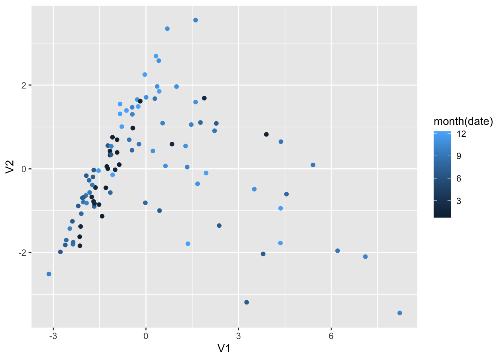
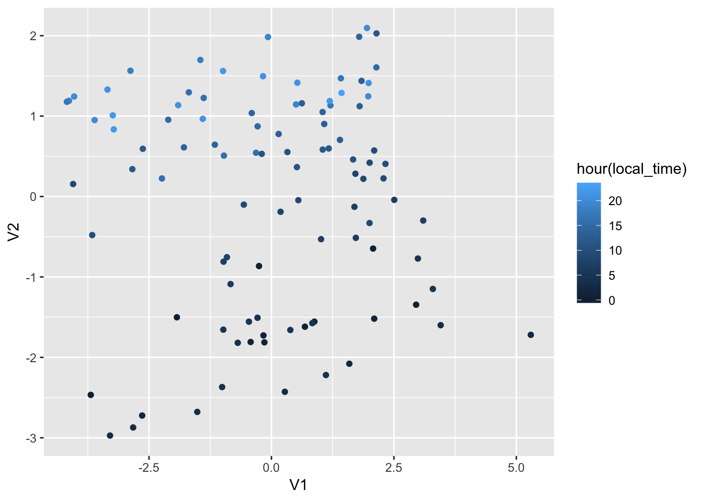
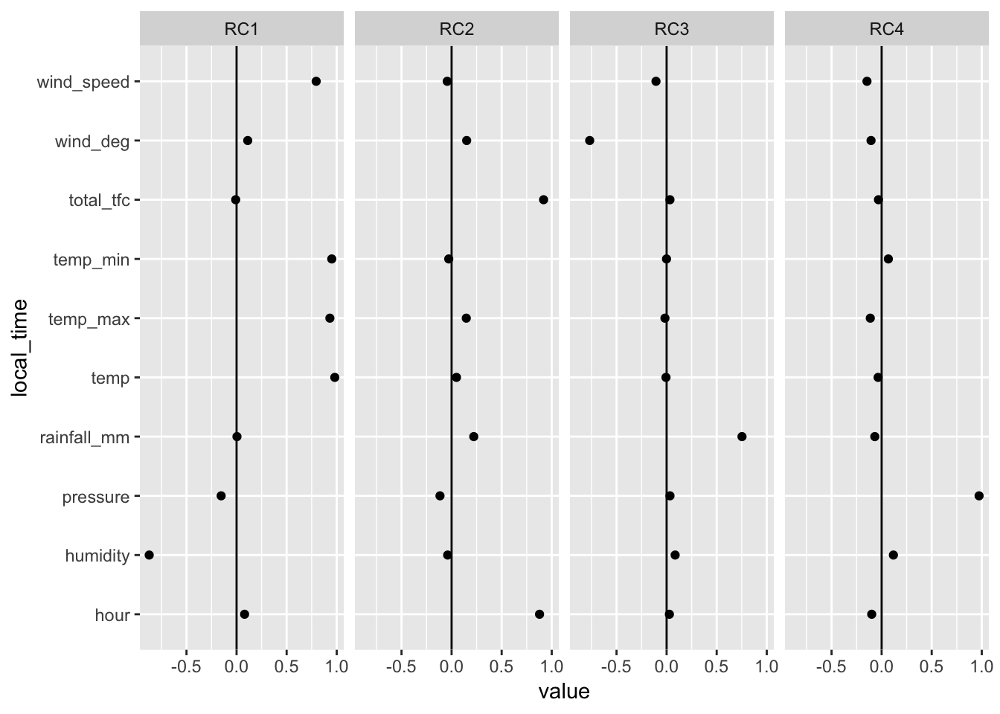

Chapter 4 Dimension Reduction
hourly_stats_weather <-changi_hourly_weather %>%
mutate(hour = hour(local_time)) %>%
mutate(date = date(local_time)) %>%
mutate(temp = temp/10) %>%
mutate(temp_min = temp_min/10) %>%
mutate(temp_max = temp_max/10)With the multiple independent variables in the data, it would be difficult to see the similarity or dissimilarity between two dependent variables. Dimension reduction techniques, however, allows the data analyst to see these information within a one-dimensional cartesian space. Here, we conduct two different methods of dimension reduction: MDS and Factor Analysis.
4.1 Multi-Dimensional Scaling (MDS)
In MDS, dimension reduction is conducted based on the distance between each variable in the dataset. To perform MDS a distance matrix is first determined.
Daily Traffic & Weather Data
daily_weather_mds<-daily_stats_weather %>% #a sample is chosen to show more visual clarity
sample_n(100)
daily_date<- daily_weather_mds %>%
select(date)
daily_weather_matrix<-daily_weather_mds %>%
select(-date) %>%
as.matrix()daily_weather_distance<- distances::distances(daily_weather_matrix, normalize = "studentize") %>%
as.matrix()
daily_mds_weather <- cmdscale(daily_weather_distance) %>%
as_tibble()## Warning: `as_tibble.matrix()` requires a matrix with column names or a `.name_repair` argument. Using compatibility `.name_repair`.
## This warning is displayed once per session.daily_mds_weather <- daily_date %>%
select(date) %>%
bind_cols(., daily_mds_weather)ggplot(daily_mds_weather, aes(x = V1, y = V2)) + geom_point(aes(colour = month(date))) Looking at the MDS of daily weather and traffic data visually, we see that there are some distinct clusters of dates - indicating similarity/dissimilarity in their corresponding variables. There were no distinct clusters based on the month the data was tested. It shows that despite being from different months, its tested variables were similar to each other which could probably be due to an unknown, latent variable.
Hourly Traffic & Weather Data
hourly_weather_mds<- hourly_stats_weather %>%
sample_n(100)
hourly_date<- hourly_weather_mds%>%
select(local_time)
hourly_weather_matrix<-hourly_weather_mds %>%
select(-local_time, -weather_id, -weather_main, -weather_description, -clouds_all, -date, -arrival_tfc, -departure_tfc) %>%
as.matrix()hourly_weather_distance<- distances::distances(hourly_weather_matrix, normalize = "studentize") %>%
as.matrix()
hourly_mds_weather <- cmdscale(hourly_weather_distance) %>%
as_tibble()
hourly_mds_weather <- hourly_date %>%
select(local_time) %>%
bind_cols(., hourly_mds_weather)ggplot(hourly_mds_weather, aes(x = V1, y = V2)) + geom_point(aes(colour = hour(local_time)))
Results of MDS on the hourly weather shows more variance as compared to that of the daily weather (which had distinct clusters). However, when we look at the difference between the hours visually, there emerges a pattern. The lower half of the plot corresponded with the evening hours while the upper half had traffic from the morning hours.
4.1.1 Data Analysis
Results of the MDS showed some similarities between the variables despite their vast differences in dates. This indicates that there are certain variables that would affect the Changi traffic flows more than other variables. These clusters would be interesting to investigate further so we can determine if there are other missing variables that could explain its similarity. The presence of outliers may also indicate an extreme dissimilarity between the variables tested.
4.2 Factor Analysis
A factor analysis is performed here to investigate if there is a latent variable that would be able to explain the variances in the data.
Daily Traffic & Weather Data
fa_daily_stats <- daily_stats_weather %>%
sample_n(100) %>%
column_to_rownames(var = "date") %>%
principal(nfactors = 4, rotate = "varimax")
fa_daily_stats## Principal Components Analysis
## Call: principal(r = ., nfactors = 4, rotate = "varimax")
## Standardized loadings (pattern matrix) based upon correlation matrix
## RC1 RC2 RC3 RC4 h2 u2 com
## daily_rainfall_mm 0.98 -0.13 -0.09 -0.01 0.98 0.021 1.1
## 30min_rainfall_mm 0.97 -0.12 -0.10 0.01 0.97 0.026 1.0
## 60min_rainfall_mm 0.98 -0.12 -0.09 -0.02 0.98 0.016 1.0
## 120min_rainfall_mm 0.94 0.00 -0.28 0.01 0.96 0.039 1.2
## temp_mean_daily -0.40 0.75 0.14 0.05 0.75 0.253 1.6
## temp_daily_max -0.10 0.19 0.87 0.13 0.82 0.178 1.2
## temp_daily_min -0.26 -0.09 0.87 -0.06 0.84 0.156 1.2
## daily_tfc 0.00 -0.02 0.05 0.99 0.99 0.014 1.0
## daily_wind_speed -0.24 0.90 -0.23 0.01 0.92 0.079 1.3
## daily_max_wind_speed 0.19 0.66 0.20 -0.07 0.51 0.486 1.4
##
## RC1 RC2 RC3 RC4
## SS loadings 4.07 1.90 1.74 1.01
## Proportion Var 0.41 0.19 0.17 0.10
## Cumulative Var 0.41 0.60 0.77 0.87
## Proportion Explained 0.47 0.22 0.20 0.12
## Cumulative Proportion 0.47 0.68 0.88 1.00
##
## Mean item complexity = 1.2
## Test of the hypothesis that 4 components are sufficient.
##
## The root mean square of the residuals (RMSR) is 0.06
## with the empirical chi square 37.29 with prob < 1e-04
##
## Fit based upon off diagonal values = 0.98fa_daily_stats[['loadings']] %>%
unclass() %>%
as_tibble(rownames = "date") %>%
gather(key = "component", value = "value", -date) %>%
ggplot(aes(x = date, y = value)) + geom_hline(yintercept=0)+
geom_point() + coord_flip() + facet_grid(~component)
RC4 and RC3 explains 91% of the data’s variance. We then plot them on cartesian coordinates to visualise it better. If there is a latent variable, we should anticipate that there would be certain clusters still available and a randomness should not be expected. The loadings in the factor analysis shows different types of modeling. In RC1, for example, the factor describes a model that describes high rainfall levels, low temperatures and normal daily traffic levels. Inversely in RC3, a high daily traffic in Changi relates to normal weather conditions. This indicates a high level relationship between weather and Changi air traffic flows.
fa_daily_stats[['scores']] %>%
unclass() %>%
as_tibble(rownames = "date") %>%
ggplot(aes(x = RC4, y = RC3)) + geom_point(aes(colour = month(date)))## Warning: Removed 1 rows containing missing values (geom_point).
Hourly Traffic & Weather Data
fa_hourly_stats <- hourly_stats_weather %>%
sample_n(100) %>%
column_to_rownames(var = "local_time") %>%
select(-weather_id, -weather_main, -weather_description, -clouds_all, -date, -departure_tfc, -arrival_tfc) %>%
principal(nfactors = 4, rotate = "varimax")
fa_hourly_stats## Principal Components Analysis
## Call: principal(r = ., nfactors = 4, rotate = "varimax")
## Standardized loadings (pattern matrix) based upon correlation matrix
## RC1 RC2 RC3 RC4 h2 u2 com
## temp 0.98 0.05 0.07 0.04 0.97 0.034 1.0
## temp_min 0.91 0.04 0.04 0.02 0.84 0.161 1.0
## temp_max 0.93 0.05 0.13 0.07 0.88 0.116 1.1
## pressure -0.27 0.01 -0.64 -0.40 0.64 0.358 2.1
## humidity -0.89 -0.03 -0.01 -0.10 0.80 0.200 1.0
## wind_speed 0.60 0.19 -0.22 0.00 0.44 0.556 1.5
## wind_deg 0.03 0.07 -0.05 0.92 0.85 0.145 1.0
## rainfall_mm -0.15 0.16 0.80 -0.25 0.75 0.249 1.3
## total_tfc 0.04 0.93 0.10 -0.02 0.87 0.130 1.0
## hour 0.15 0.91 0.04 0.10 0.87 0.130 1.1
##
## RC1 RC2 RC3 RC4
## SS loadings 3.92 1.77 1.14 1.10
## Proportion Var 0.39 0.18 0.11 0.11
## Cumulative Var 0.39 0.57 0.68 0.79
## Proportion Explained 0.50 0.22 0.14 0.14
## Cumulative Proportion 0.50 0.72 0.86 1.00
##
## Mean item complexity = 1.2
## Test of the hypothesis that 4 components are sufficient.
##
## The root mean square of the residuals (RMSR) is 0.08
## with the empirical chi square 53.06 with prob < 1.7e-07
##
## Fit based upon off diagonal values = 0.96fa_hourly_stats[['loadings']] %>%
unclass() %>%
as_tibble(rownames = "local_time") %>%
gather(key = "component", value = "value", -local_time) %>%
ggplot(aes(x = local_time, y = value)) + geom_hline(yintercept=0)+
geom_point() + coord_flip() + facet_grid(~component)
The factor analysis results hourly weather and traffic dataset provides us with similar relationships. We are able to visualise how humidity inversely affects the total amount of traffic handled in the hour. Since a higher humidity value is related to temperature and points towards adverse weather (high humidity = more clouds, generally), this could indicate how weather affects hourly air traffic flows in Changi.
fa_hourly_stats[['scores']] %>%
unclass() %>%
as_tibble(rownames = "local_time") %>%
ggplot(aes(x = RC2, y = RC3)) + geom_point(aes(colour = hour(local_time)))
In the above plot, there is a lack of ckustering of data points. However, we can also see that there is a distinct difference in the left and right half of the plots - the variables related to the evening hours have points clustered to the right half while the early hours have its variables clustered on the left hand side of the factor analysis plot.
4.3 Data Analysis
Dimension reduction techniques of multidimensional scaling and factor analysis performed in this section showed that the variables tested in the dataset had some evidence of clustering. In particular,